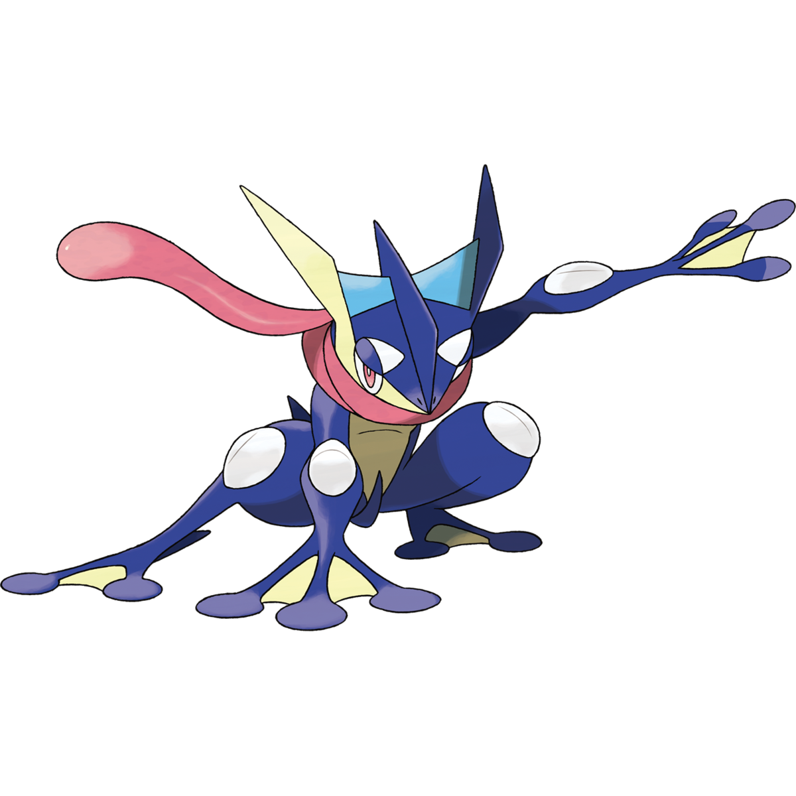

Greninja #658
It creates throwing stars out of compressed water. When it spins them and throws them at high speed, these stars can split metal in two.
It creates throwing stars out of compressed water. When it spins them and throws them at high speed, these stars can split metal in two.